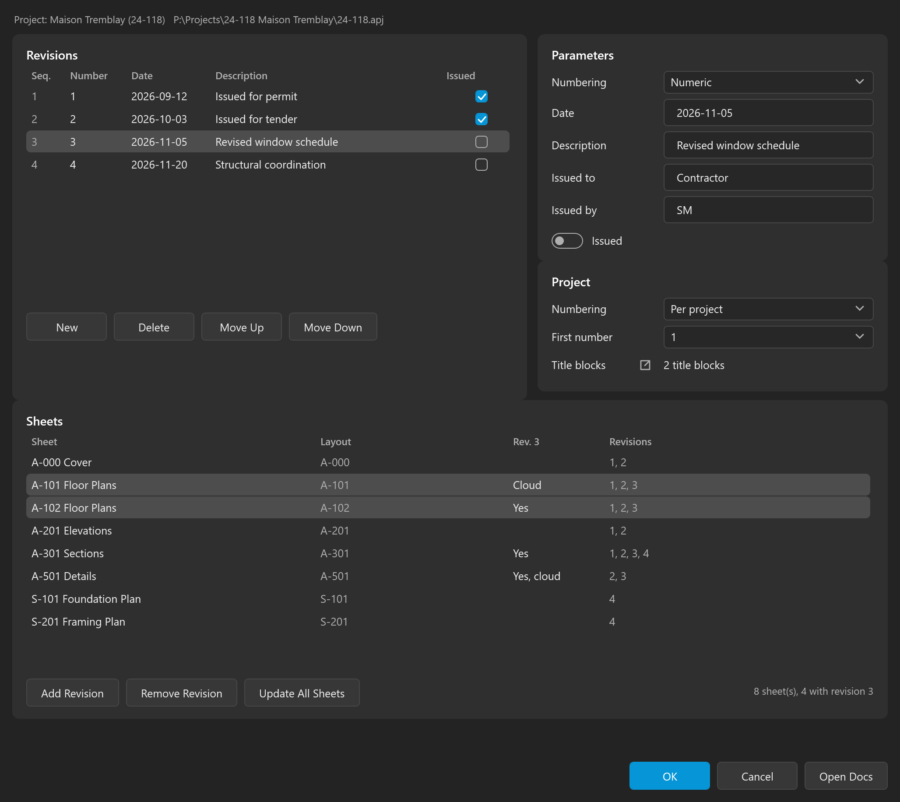

Revisions
| Function Syntax | Dyl-Revisions, REVS, RCLOUD, REVUP, REVTB |
| Requires | AutoCAD 2025 or later for Windows, a Project Navigator project (AutoCAD Architecture) |
| Licence | GNU General Public License v3 |
Program Description
One list of revisions for the whole project, as in Revit. Give a revision to a sheet, or draw a cloud, and its title block fills in by itself.

How To Use
- Once per title block – type REVTB, click Pick... and select the title block. Check its rows, then OK.
- Add a revision – type REVS, click New and type its description. Select its sheets and click Add Revision, then OK.
- Show a change – on the layout, type RCLOUD, draw the cloud and place its tag.
- Once it is sent – check Issued: the revision is locked.
Revisions Window
- Revisions – the list, with New, Delete, Move Up and Move Down.
- Parameters – numbering (1, 2, 3 or A, B, C), date, description, issued to and by.
- Project – numbers per project or per sheet; the title blocks.
- Sheets – every sheet, and whether it has the revision. Update All Sheets brings them up to date.
Revision Title Blocks Window

Tell DynALisp where each title block shows its revisions: its rows, which row is the newest, and the attributes of the current revision. Pick... guesses them for you.
Updating The Sheets
- The open drawings are updated: save them. The closed ones are updated and saved.
- A drawing open by someone else is skipped, and catches up later.
- Turn on Revisions in Dyl-Settings so that each sheet updates when it opens.
Known Limitations
- Draw clouds in the layout, not in model space.
- The title block must be a block with attributes, not an xref.
Command Names And Aliases
The short names are aliases of the command: change them in Dyl-Suite. The rows marked ↳ are its variants, run by their short name.
| Command | Aliases | Name |
|---|---|---|
| Dyl-Revisions | REVS | Revisions |
| ↳ Pst-RevisionCloud | RCLOUD | Revision Cloud |
| ↳ Pst-RevisionsUpdate | REVUP | Update Revisions |
| ↳ Pst-RevisionTitleBlocks | REVTB | Revision Title Blocks |